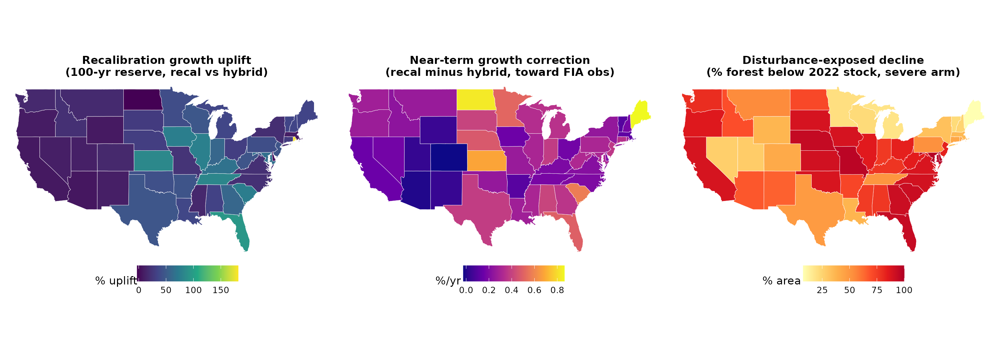

How the YC empirical engine's near-term growth was corrected to the FIA longitudinal record, and two data-grounded scenarios showing that a no-harvest reserve is a conditional carbon sink, not an automatic one.
Age-based yield curves are fit to a chronosequence (stands of different ages seen once). On 272,356 undisturbed FIA remeasurement plots, the chronosequence local slope is about half the observed longitudinal increment at young-to-mid ages, because the oldest stands in the cross-section sit on systematically poorer or more disturbance-shaped sites. Marched forward, the curves under-projected growth by −0.68 %/yr at the CONUS mean (every state below the 1:1 line).
A cell-level (forest-type × ecoregion × owner) observed-increment kernel,
blended into the hybrid trajectory with weight decaying to zero by each cell's
culmination age A* (senescence preserved) and capped at the 95th-percentile
observed standing carbon. Stress-tested with held-out CV, a weight sweep, a physical
ceiling, and a bootstrap.
| variant | t100 (Tg C) | 100-yr gain | near-term bias | spatial r |
|---|---|---|---|---|
| production hybrid | 13,701 | +18.0% | −0.68 | 0.78 |
| agedist + ceiling (shipped) | 17,722 | +52.7% | −0.41 | 0.84 |
The recalibrated reserve already carries average 2000–2020 disturbance. Two scenarios expose the downside under climate-elevated loss:
Disturbance-exposed (exogenous): an explicit FIA-COND disturbance drag
(p_dist·severity·density, fire-led). At recent rates the reserve
tracks the growth ceiling (+62%); at 2× disturbance frequency it goes flat
(−1%), and at 3× it becomes a net source (−21%), with 34,201 of
59,136 forest-strata pixels ending below their 2022 stock.
Mortality-stressed (endogenous): the FIA GRM density-dependent mortality
m(C) applied as excess loss on the recalibrated reserve, age-anchored
so the baseline reproduces production exactly. CONUS 100-yr: +53% baseline, +31% at
1.5× mortality, +13% at 2× with ~half of pixels declining. This is the chronic
competition / self-thinning channel, complementary to the episodic disturbance arm.

managed (harvest) scenario as managed (harvest, disturbance-exposed)
and managed (harvest, mortality-stressed). These are now projected
in-loop (ycx_managed_stress.R): each pixel is run forward under its owner
harvest regime (Industrial clearcut R=45; NIPF/State/Public-Other partial), with the stress
drag responding to the managed stand's actual carbon each year — so harvest
age-resets correctly lower the exposure (a recently cut stand is young, low-carbon, and
loses little). CONUS managed (harvest) at 2× stress: −30% (disturbance) and
−27% (mortality) vs the managed baseline, with strong geographic variation (e.g. Maine
only −4% / −18% given its low disturbance). This replaces the earlier
reserve-borrowed fractional approximation.Scripts (in scripts/yield_curve_engine/): ycx_ingrowth_gap.R,
ycx_recal_cell.R, ycx_recal_capped_export.R,
ycx_disturbance_quantify.R, ycx_disturb_scenario.R,
ycx_endog_mortality.R, ycx_mortality_arm.R,
ycx_apply_recal_disturb.R → ycx_merge_perseus.py. Decision
record: ADR 0002;
results: disturbance_decline_scenario.md.